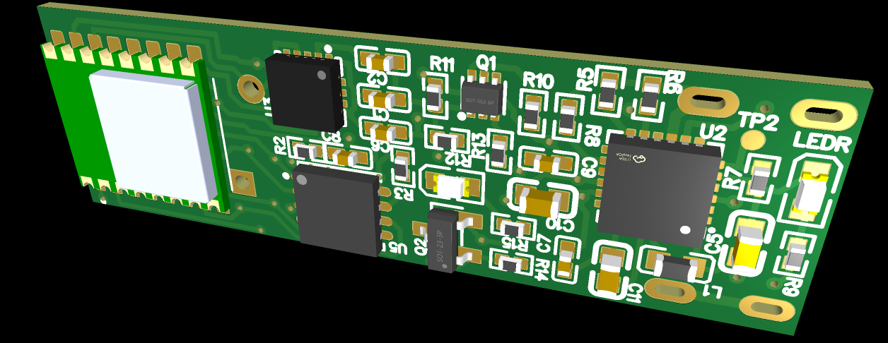
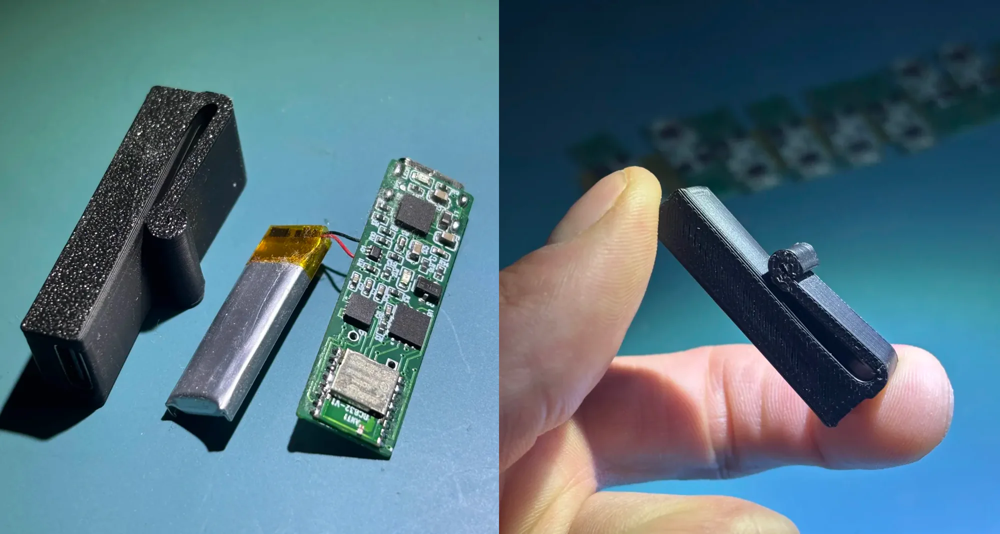
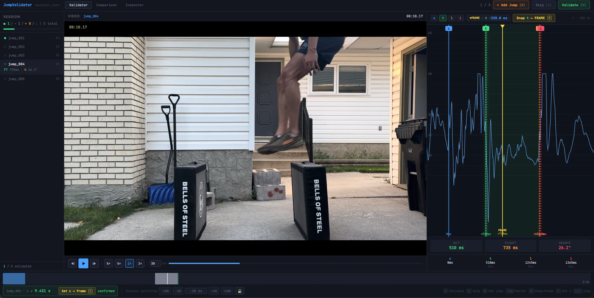
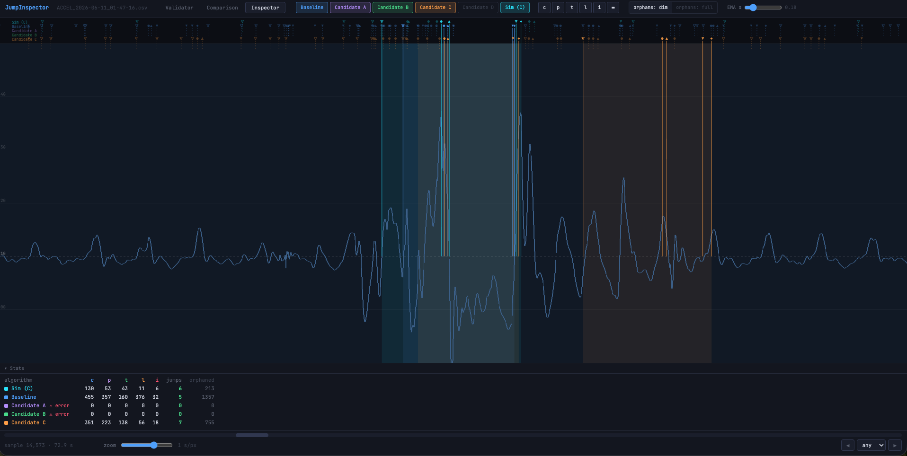
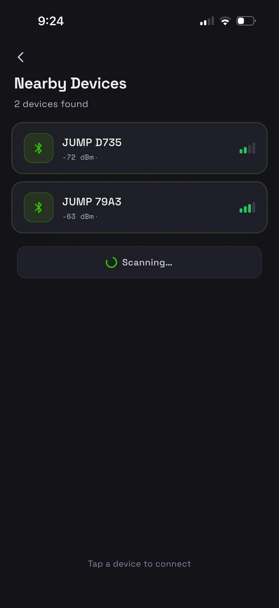
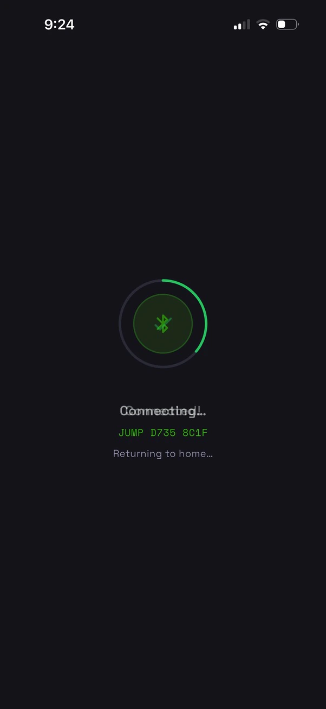
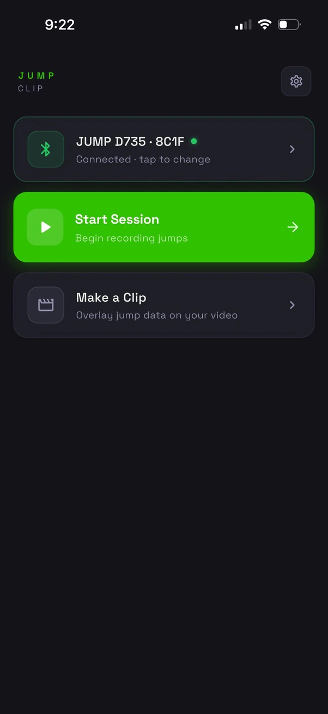
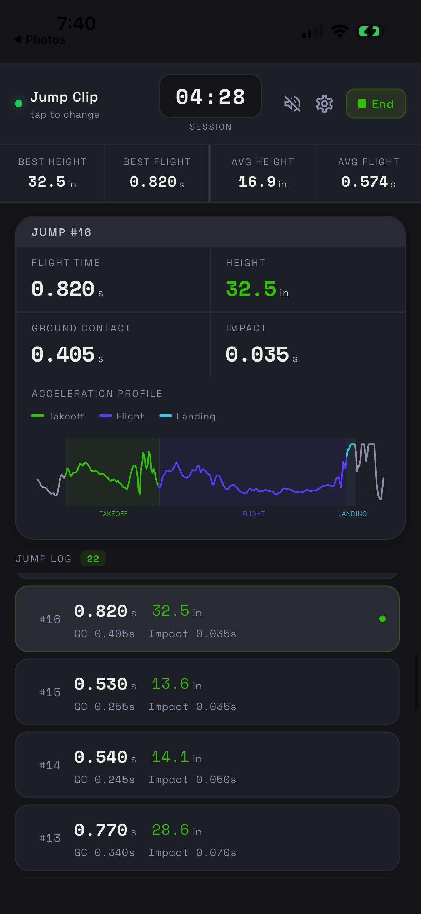
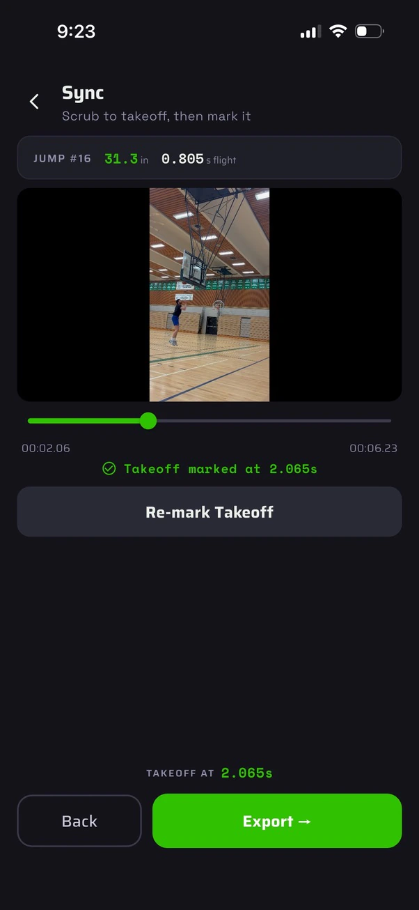
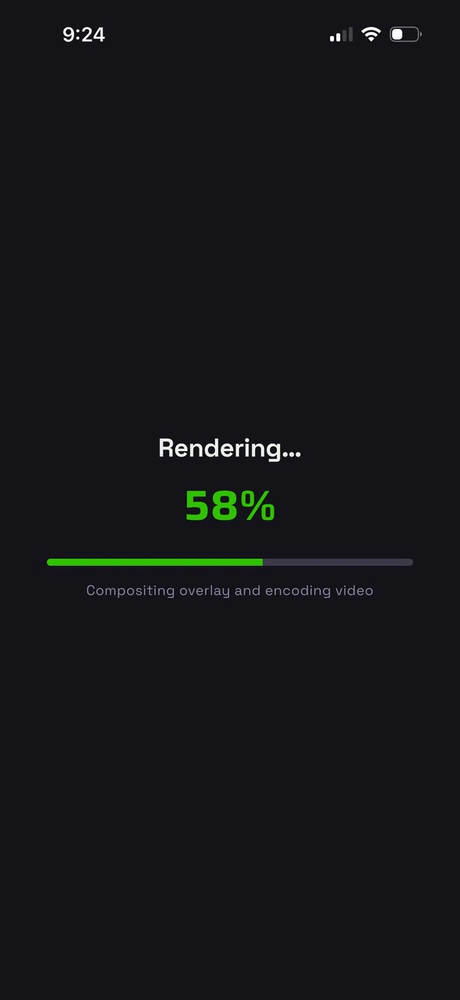

The goal: Detect jump height and frequency for progression tracking and stress monitoring in athletes.
Theory of operation: Continuously monitor for flight time and ground contact time events using a wearable 3-axis accelerometer, and upload the results to a mobile app over BLE.
Jump height, and other metrics such as RSI (reactive strength index) can be derived from flight time using basic projectile motion equations (with an added calibration factor).
Video overlay generated automatically using outputs from on-device processing.
Height, flight time and ground contact are burned into the clip by the mobile app after the session is synced.

Form Factor: The jump tracking device needs to be discreet and unobstructive for in-game use by ball sport athletes (basketball, volleyball etc.). The form factor of the device is a thin clip to be worn on the athlete's waistband (prototype dimensions: ~38mm x 13mm x 7.5mm).

[WIP] — tooling built so far:


[WIP] — the app scans for nearby clips over BLE, records a live session, and can burn the resulting jump data into a video of the session.






Session view shows best and average height and flight time, a per-jump takeoff / flight / landing acceleration profile, and the running jump log.